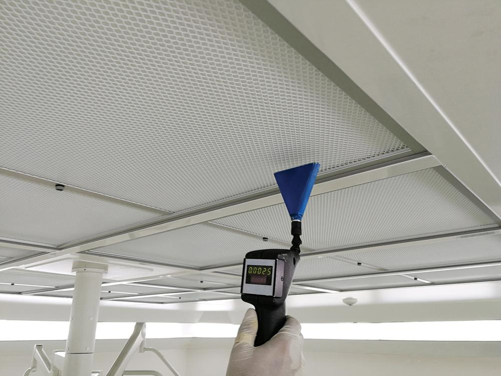
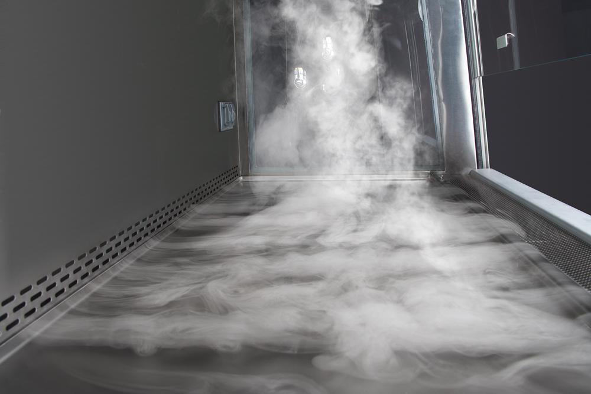
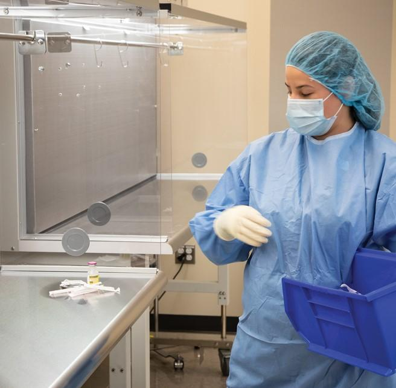
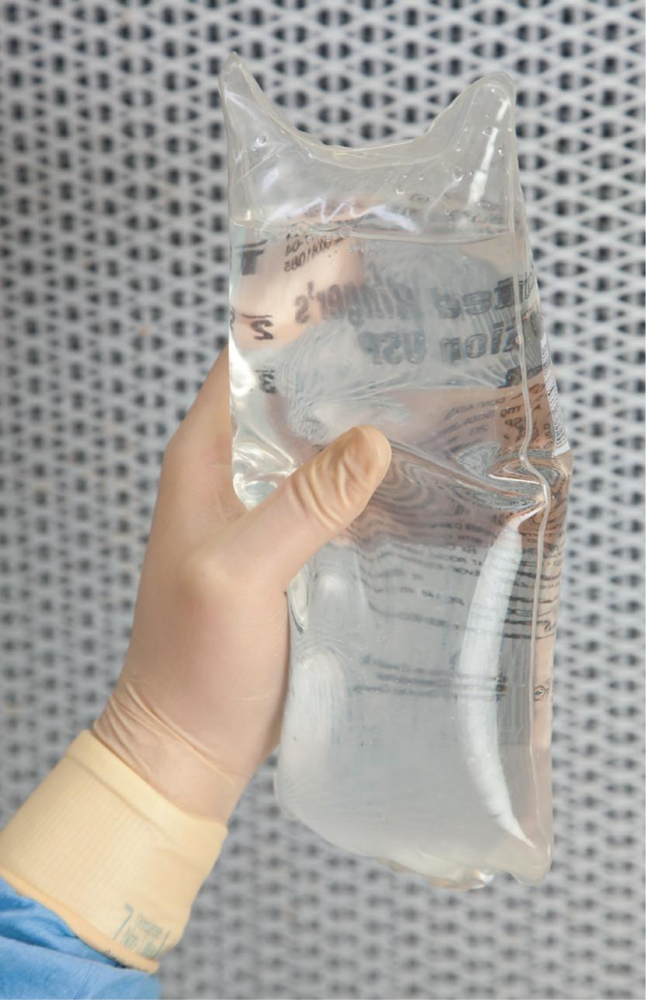

PART 1: CONCEPTS
4.6 Quality Assurance in Sterile Compounding Environments
Quality assurance (QA) is a program that is defined by the policies and procedures of a sterile compounding facility and that ensures established standards for quality and uniformity of CSPs are met before dispensing these sterile preparations. These policies and procedures include environmental monitoring, recognition of risk categories of CSPs (Category 1, Category 2, and Category 3), and identification of sources of contamination.
Environmental Monitoring
Environmental monitoring is an important aspect of a sterile compounding facility’s QA program. In this type of facility, environmental monitoring includes regular tracking and documentation of air temperature, humidity, and pressure readings in ISO-classified areas. It also involves periodic surface and airborne particle sampling in these areas to check for contaminants. In an SCA, environmental monitoring is not required but, if the SCA is also used for drug storage, then temperature and humidity must be monitored.
Environmental monitoring in the sterile compounding environment is generally performed by pharmacy technicians. The pharmacist-in-charge has ultimate responsibility for ensuring that pharmacy QA policies and procedures are followed. This monitoring may be performed by manual observation or by an automatic recording device. Readings that are outside of allowed parameters require an immediate response by trained personnel in a manner that is clearly defined in a facility’s SOPs manual. However, all pharmacy personnel play a role in ensuring that facilities and equipment are monitored and maintained for the safe preparation of CSPs.
Field Notes
Many pharmacies use compliance tracking software to assist in QA procedures, such as the following:
- monitoring the temperatures of pharmacy refrigerators, freezers, incubators, and storage areas
- cleaning and disinfection of surfaces
- replacing the prefilter of a PEC
- monitoring room temperature and humidity in a cleanroom suite
- monitoring air pressure in a cleanroom suite
- documenting viable airborne particles and surface test results in PECs and buffer rooms
- monitoring personnel training and competency assessments.
QA documentation is used to track trends, identify issues requiring action and remediation, and provide evidence of compliance with monitoring requirements identified in the appropriate USP standards. Compliance records can be easily compiled for review by pharmacy management as well as compliance regulatory agencies.
Air Quality and Design Certification
ISO-classified areas including PECs must be certified to ensure that these environments meet air quality and design specifications. Certification must occur:
- before using new or remodeled facilities and then every six months thereafter
- after servicing facilities or equipment
- when replacing or relocating a PEC
- when altering the configuration of a room in a way that could affect airflow or air quality.
Oversight Responsibilities of Trained Personnel
Certification personnel from a company that independently certifies sterile compounding equipment and cleanroom suites conduct air quality, circulation, velocity, and pressure tests at sterile compounding facilities. They follow procedures such as those outlined in the current CETA Certification Guide for Sterile Compounding Facilities (rev. 2015) or another equivalent guideline.
For air quality, certification personnel must conduct leak testing of HEPA filters in both ISO-classified areas and ISO Class 5 PECs upon installation and as part of recertification. They must also take air samples to check particle counts in each ISO-classified area and in each ISO Class 5 PEC under dynamic operating conditions, or conditions that mimic typical compounding activities. These areas are then assigned ISO class numbers based on the number of particles (0.5 micron or larger per cubic meter).

For airflow circulation, certification personnel conduct airflow testing every six months in ISO-classified areas and unclassified C–SCAs to ensure adequate ACPH. To conduct this test, they may use a velometer or a thermal anemometer. As stated earlier, ISO Class 7 buffer rooms must have at least 30 ACPH. One or more ISO Class 5 PECs in an ISO Class 7 buffer room may contribute up to 15 ACPH to the total required 30 ACPH. If a PEC contributes to the required 30 ACPH, the PEC must run continuously.
Certification personnel must also conduct two types of airflow tests in ISO Class 5 PECs. One test measures the velocity of airflow coming through the HEPA filter. The other, called a dynamic airflow smoke pattern test, observes air patterns within the unidirectional space to verify that the PEC and HEPA filter are operating in a way that meets ISO Class 5 specifications. In C–PECs, airflow and smoke pattern tests must also demonstrate containment. These tests must also be performed in new or altered ISO-classified rooms to ensure proper air circulation.
At the completion of these certification tests, sterile compounding personnel review the reports for accuracy and then implement a clearly defined, corrective action plan in response to any out-of-range results. This plan may include process or facility improvements, personnel training, cleaning and disinfection procedural changes, or HEPA filter replacement and/or repair.
After remediation of the situation, the area(s) in question must be retested for compliance with the standard. Sterile compounding procedures should not be reinstituted until test results fall within allowable parameters. Specific instructions should be included in a facility’s SOPs manual, and all records related to testing and corrective action should be available in the pharmacy for the life of the equipment and facility.

Air Temperature and Humidity
In a cleanroom suite, air temperature should be continuously maintained at 68° F (20° C) or cooler, and relative humidity should be maintained at or below 60%. A cool air temperature and low humidity in the sterile compounding environment are necessary for two reasons. First, these air measurements minimize the risk of airborne and surface microbial growth. Second, these cool conditions ensure the comfort of personnel who are wearing layers of garb and working under warm lights and within fixtures.
Air temperature and humidity must be controlled through an efficient HVAC system. Free-standing humidifiers, dehumidifiers, and air conditioners may not be used in ISO-classified areas or within the perimeter of an SCA. These portable devices have the potential to generate particulates and disperse airborne contaminants such as fungi.
Oversight Responsibilities of Trained Personnel
Trained personnel must verify the accuracy of temperature monitoring devices at least every 12 months or as required by the devices’ manufacturers (see Table 4.4). They must also monitor the temperatures of storage areas that house drugs, other sterile compounding components, and CSPs to ensure that air measurements are within the required ranges. If personnel discover that a drug, component, or CSP has been exposed to temperatures outside of the acceptable ranges, they must determine whether the drug, component, or CSP is likely to retain its integrity or quality. If this decision cannot be made with certainty, they must discard the substance or sterile preparation.
| Environment | Temperature Range ° C | Temperature Range ° F |
|---|---|---|
| Freezer | –25° to –10° | –13° to 14° |
| Refrigerator | 2° to 8° | 36° to 46° |
| Room† | 20° to 25° | 68° to 77° |
|
*Table data per USP <797> as referenced in USP <659> Packaging and Storage Requirements †Excursions between 15° and 30° C (59° and 86° F) that are experienced in pharmacies, hospitals, and warehouses—as well as during shipping—are allowed. Provided the mean kinetic temperature does not exceed 25° C, transient spikes up to 40° C are permitted if they do not exceed 24 hours. Spikes above 40° C may be permitted only if the manufacturer so instructs. |
||
In addition, compounding personnel must document air pressure. Using a pressure differential monitor, they measure pressure cascade, or the process in which air flows from a higher-pressure area to a lower-pressure area.
Monitors that provide a readout of pressure are typically located in an anteroom. However, monitors that gauge temperature and humidity are located in multiple areas of the pharmacy. Sterile compounding personnel are responsible for oversight of the monitors and documentation of these readings.
Viable Air Sampling
Viable air sampling must be performed in each ISO-classified area to identify unacceptable levels of microbial growth in the air, which could potentially contaminate CSPs. Testing must be performed at least every six months as well as in the following situations:
- before compounding in a new cleanroom suite
- at the completion of remodeling or any event that may generate excessive particles such as dust or other potential contaminants
- before using a new PEC
- upon moving a PEC or having it serviced or recertified
- in response to identified problems, trends, or changes that could affect the sterile compounding environment (such as changes in cleaning agents).
Oversight Responsibilities of Trained Personnel
Trained personnel must provide oversight for compliance with microbial air sampling tests and remediation procedures. In many facilities, an independent certification company performs airborne testing and reports its findings to sterile compounding personnel for action as necessary. In other facilities, qualified sterile compounding personnel conduct the microbial air sampling test.
Regardless of the individuals who conduct the test, trained personnel use a general microbiological growth media that support the growth of bacteria and fungi (e.g., trypticase soy agar [TSA]). A Certificate of Analysis (COA) from the manufacturer must verify that the test media meet the expected growth promotion, pH, and sterilization requirements.
Trained personnel must conduct viable airborne particle testing in each ISO-classified area under dynamic operating conditions. To do so, they use an impaction device containing a media plate and that collects at least 1 cubic meter (1,000 L) of air from specific ISO-classified areas (see Table 4.5). When sampling is complete, personnel cover the media plate and label the plate with the date, time, sample location, and any additional information that may be needed. They then place the plate upside down in a calibrated incubator to prevent condensation from forming on the plate cover. The sample media must incubate at 86° to 95° F (30° to 35° C) for no less than 48 hours in an incubator placed outside of the sterile compounding environment to prevent contamination of that area. Personnel must regularly monitor the incubator’s temperature during this incubation period.
| ISO Class | Action Level* |
|---|---|
| Class 5 | > 1 CFU |
| Class 7 | > 10 CFU |
| Class 8 | > 100 CFU |
| *Per cubic meter (1,000 L) of air collected | |
At the end of this initial incubation period, personnel remove the sample from the incubator and examine the sample media for growth. They document their findings by recording the total number of colony-forming units (CFUs), which are the units used to estimate colonies of viable bacteria or fungi in a sample. Personnel must also document the sample location and sample date. When they have finished recording their findings, they lower the incubator temperature to 68° to 77° F (20° to 25° C) and incubate the sample media for no less than five additional days.
At that end of the second incubation period, personnel examine the sample media for growth and document the total number of CFUs, the sample location, and the sample date. Personnel, with the assistance of a microbiologist, must attempt to identify any growth that exceeds action levels by documenting the principal taxonomic category to at least the genus level. In other words, they must attempt to identify the microorganism down to the genus level (see Figure 4.4).

Personnel must investigate the cause of the above actionable microorganism growth and implement a corrective action plan. This plan is contingent on the CFU count and the type of microorganism recovered but should include an evaluation of trends and may include:
- process or facility improvements
- personnel training
- the use of appropriate cleaning and disinfection agents to kill the identified microorganism
- HEPA filter
Repeat testing should be implemented after cleaning and disinfection to verify that the microorganism is no longer present above action levels. Instructions for responding to testing that falls at or above specified action levels must be detailed in each facility’s SOPs manual.
Workplace Wisdom
Sterile compounding personnel may conduct an alternative method of microbial air sampling by collecting two samples at each location and then incubating the samples simultaneously in separate incubators. The incubators must be set at 86° to 95° F (30° to 35° C) for no less than 48 hours and 68° to 77° F (20° to 25° C) for no less than five days. If a fungal media is used for this sampling, the sample must incubate at the lower temperature for no less than five days.
Surface Sampling
Surface sampling is useful for identifying unacceptable levels of microbial growth on surfaces and for evaluating cleaning and disinfection procedures of sterile compounding personnel. This testing must be performed at least monthly in each ISO-classified area as well as in the following situations:
- before compounding in a new cleanroom suite
- at the completion of remodeling or any event that may generate excessive particles such as dust or other potential contaminants
- before using a new PEC
- upon moving a PEC or having it serviced or certified
- in response to identified problems, trends, or changes that could affect the sterile compounding environment (such as changes in cleaning agents).
Oversight Responsibilities of Trained Personnel
Certified personnel or trained sterile compounding personnel conduct surface sampling. Samples must be taken in each ISO-classified area listed:
- interior surfaces of a PEC
- equipment surfaces contained in a PEC
- frequently touched work surfaces near a PEC
- pass-through surfaces.
These samples must be taken at the end of compounding activities or at the end of a shift before surfaces are cleaned and disinfected.
To conduct this test, personnel use a general microbiological growth media that support the growth of bacteria and fungi (e.g., TSA). This media must be supplemented with additives (e.g., lecithin and polysorbate 80) to neutralize the effects of any residual disinfecting agents. The growth media also must have a manufacturer’s COA that verifies the expected growth promotion, pH, and sterilization requirements. After sampling, personnel must thoroughly clean and disinfect the surfaces.
Trained personnel must incubate the samples in the same manner as the air samples discussed in the previous section. After the incubation period, the samples must be examined for growth. Trained personnel must then document the CFU count, sample location, and sample date (see Table 4.6). If CFU counts are above action levels, personnel must identify the growth with the assistance of a microbiologist, investigate the cause of the microorganism growth, and implement a corrective action plan to remediate the situation. Personnel must then perform follow-up testing as necessary. This plan is contingent on the CFU count and the type of microorganism recovered but should include an evaluation of trends and may include:
- process or facility improvements
- personnel training
- the use of appropriate cleaning and disinfection agents to kill the identified microorganism
- HEPA filter
| ISO Class | Action Level |
|---|---|
| Class 5 | > 3 CFU |
| Class 7 | > 5 CFU |
| Class 8 | > 50 CFU |
CSPs and Quality Assurance
In addition to environmental monitoring, personnel must adhere to USP <797> standards regarding the quality and safety of CSPs. These quality assurance standards protect patients from receiving CSPs that do not have the correct components or dosage or that may be contaminated. USP <797> categorizes CSPs based on compounding environment, risk of potential for microbial growth, and the period within which a CSP must be used. For the latter category, a BUD is assigned to each CSP. After this date, administration to a patient may not begin.
Categories of CSPs
The three categories of CSPs are Category 1, Category 2, and Category 3. Detailed information on these categories can be found in USP <797>.
Category 1 CSPs may be compounded in a PEC located in an unclassified SCA or in a cleanroom suite. These CSPs have a BUD of 12 hours or less at controlled room temperature or 24 hours or less when refrigerated.
Category 2 CSPs must be compounded in a PEC located in a buffer room within a cleanroom suite. Because the buffer room is a more controlled environment than an unclassified SCA, Category 2 CSPs may have a BUD greater than 12 hours at controlled room temperature and greater than 24 hours when refrigerated. The BUD for Category 2 CSPs is contingent on being prepared according to the parameters identified in USP <797>. In the absence of sterility testing, Category 2 CSPs prepared from sterile components should not have a BUD exceeding 4 days at controlled room temperature, 10 days when refrigerated, or 45 days when frozen. CSPs prepared from nonsterile components have a shorter BUD unless extra quality-control measures have been taken.
Category 3 CSPs must be compounded in a PEC located in a buffer room within a cleanroom suite that meets higher quality assurance requirements than Category 2 so higher BUDs may be assigned. Category 3 CSPs must undergo sterility testing, endotoxin testing (when applicable), and stability determination. Compounding Category 3 CSPs also have more requirements than Category 2 CSPs for personnel qualification (media-fill testing), continuous use of sterile garb, full skin coverage, use of sporicidal disinfectants in the PEC, and increased frequency of viable air and surface sampling.
Oversight Responsibilities of Trained Personnel
In a pharmacy, the pharmacist-in-charge or a designated individual is responsible for developing policies and procedures designed to reinforce USP <797> standards for all sterile compounding procedures. USP <797> requires compounding facilities to identify a designated person(s) who is responsible and accountable for the performance and operation of the facility and personnel in the preparation of CSPs and for other activities described in the standard. However, it is the responsibility of all pharmacy personnel to adhere to these policies and procedures to help ensure the health and safety of patients receiving CSPs.
The pharmacist-in-charge or a designated person typically assigns the CSP category (Category 1, Category 2, or Category 3) and BUD for each CSP prepared in a facility. To that end, the pharmacist or designated individual is guided by the manufacturer’s labeling for the specific drug and its components, USP <797> and other applicable standards, and evidence-based literature from trusted pharmacy drug information resources.
Personnel Conduct and Quality Assurance
In addition to environmental monitoring and cleaning and disinfection practices, the conduct of personnel in the sterile compounding environment is critical to ensuring the preparation of quality CSPs for patients. In fact, personnel are the number one source of contamination in the sterile compounding environment. They shed millions of skin cells, dander, and hair particles and emit mucosal secretions from their noses and mouths. In addition, their clothes may hold dust, dirt, and other particulate matter. In light of these facts, personnel must adhere to USP <797> standards for hand hygiene, garbing, cleaning and disinfection, and behavior in SECs and in PECs to minimize contamination of the sterile compounding environment. (To learn more about personnel conduct in the sterile compounding environment, refer to the procedural labs of Unit 2 of this textbook.)
Cleanroom Suite Restrictions
As mentioned earlier, a cleanroom suite is restricted to authorized, trained, sterile compounding personnel and nonpharmacy personnel who are responsible for maintenance and environmental services. Individuals who have conditions that preclude them from working in the sterile compounding environment (e.g., weeping sores, respiratory infection, rash, etc.) must report these conditions.
While in a cleanroom suite, personnel may not have food, beverages, candy, or gum. They must move slowly to avoid creating air currents. Finally, they should minimize talking and try to avoid coughing, sneezing, laughing, and passing gas in the buffer room, which interrupt airflow. All of these aforementioned items or actions contribute to contamination of the sterile compounding environment.
Anteroom Practices
When entering an anteroom, personnel should minimize the time the door is open and should not open the door to an anteroom at the same time the door to the buffer room is open. Once in an anteroom, personnel should not don garb while others are removing garb. Removal of garb sheds particles and could contaminate those individuals who are garbing to enter a buffer room. (For more information on anteroom practices, see Chapter 8.)
Staging and Transfer of Supplies
After donning gloves, sterile compounding personnel must use low-lint wipers to wipe the exterior surfaces of equipment and supplies with sterile 70% IPA or another suitable disinfecting or sporicidal agent. This process is referred to as staging and must be performed before bringing supplies into the clean side of an anteroom, placing the items into pass-throughs, or bringing the supplies inside the perimeter of an SCA. Personnel must also clean and disinfect the entire surface of supply carts before moving the carts from the dirty side of an anteroom to the clean side of an anteroom.
Sterile compounding personnel should not use a pass-through (if one exists in the sterile compounding area) that connects the unclassified pharmacy area to a buffer room to introduce equipment and supplies into a buffer room. This type of pass-through should only be used to move items out of the buffer room, ensuring that only one door of the double-door pass-through is open at a time.
Buffer Room and PEC Practices
When entering a buffer room, personnel should be mindful that the door to the anteroom is closed before opening the door to the buffer room. Once in the buffer room, personnel should move slowly and deliberating to avoid unnecessary air turbulence. They also should model their conduct in the buffer room and within the PEC to conform with the standards of USP <797>. These standards mandate the staging and transfer of supplies, the use of aseptic technique, and the process of release testing of the CSP.
Staging and Transfer of Supplies
Sterile compounding personnel must conduct a repeat staging of equipment and supplies using sterile 70% IPA before introducing the items into a PEC. Sterile supplies provided in sealed packages are removed from their packages within the ISO Class 5 environment as they are needed during compounding procedures. These sterile supplies do not need to be wiped with sterile 70% IPA.

Personnel must use slow, purposeful movements when placing and handling supplies within a PEC. When HEPA-filtered air flows across or onto the DCA of a PEC, it also passes over and around supplies and hands in the DCA. Personnel need to be mindful of the area immediately behind a supply item as anything situated behind the item does not receive uninterrupted airflow from the HEPA filter. In addition, the area directly behind and to the side of the supply item is an area where the HEPA-filtered air has been made turbulent as it flows around the item. This area is known as the zone of turbulence and is considered contaminated because the positioning of the supply item prevents uninterrupted air from flowing to anything behind the item. In addition, the area along the outer edge of the DCA is where air from the HEPA filter mixes with potentially contaminated room air. This area, which runs along the entire outer edge of the DCA and extends six inches inside of the hood, is referred to as the outer six-inch zone. Sterile compounding personnel must not prepare CSPs in the zone of turbulence or in the outer six-inch zone.
Use of Aseptic Technique
Sterile compounding personnel must use aseptic technique when preparing CSPs. The word aseptic means “without infection.” Aseptic technique is a set of practices and procedures used to minimize the potential introduction of contaminants (including infections) into CSPs. A breach in aseptic technique can lead to several sources of contamination including shadowing, touch contamination, needlesticks, and coring.
Shadowing
To minimize the potential for contamination caused by particles in the air, personnel must perform sterile compounding within the DCA of a PEC. As mentioned previously, the outer six-inch zone may not be used for compounding because of this zone’s mix of HEPA-filtered air and room air.
As personnel manipulate supply items in PECs, they must remember that the critical sites of supply items must be continuously exposed to unidirectional first air, or HEPA-filtered air that moves uninterrupted to the critical sites (see Figure 4.5). First air that is blocked by personnel or supplies that come between the HEPA filter and the critical sites of supply items is referred to as shadowing, a potential source of CSP contamination.

View long description Hide description
The labels are as follows: CSP, HEPA filter, zone of turbulence for this CSP, outer six-inch zone of PEC, and direct compounding area (DCA).
Techniques to avoid shadowing differ depending on whether the airflow is horizontal or vertical. In PECs with horizontal airflow, air flows from the HEPA filter over the work surface toward sterile compounding personnel. Consequently, hands or objects that come between the HEPA filter and the critical sites of supply items cause shadowing. In PECs with vertical airflow, air flows from the HEPA filter located above the work surface. Therefore, hands or objects that come between the overhead HEPA filter and the work surface cause shadowing.
Touch Contamination
Another source of contamination that occurs within a PEC is touch contamination. This type of contamination results from personnel touching a critical site of a supply item or from a critical site touching a contaminated surface. Both situations must be avoided. If touch contamination occurs, personnel must wipe their gloves with sterile 70% IPA and allow them to dry. In addition, they must swab the critical site with sterile 70% IPA swab and allow the site to dry.
Needlesticks
Needlesticks or cuts are also sources of contamination. When these situations occur in a PEC, personnel should assume that all drugs and supplies within the PEC are contaminated and must be discarded into designated waste containers. Personnel should seek medical attention if needed. If medical attention is not needed, personnel must return to the anteroom, remove all garb, repeat hand hygiene, don new garb, and then clean and disinfect all surfaces of the PEC and any equipment inside before proceeding with compounding.
Use of Release Testing
As part of quality assurance, sterile compounding personnel perform a process known as release testing once sterile compounding procedures are completed. This process involves inspection of a CSP prior to its release for patient administration. It may also involve pH, sterility, and endotoxin tests of the CSP to ensure that quality specifications have been met.
Inspection may reveal the formation of particulate matter, or solid substances in a solution. Particulates may result from coring or from incompatibility of CSP ingredients. Inspection may also indicate container closure issues. Any irregularities of the solution or of the container indicate CSP contamination.
Coring
Coring occurs when part of a vial stopper breaks off and enters the CSP during needle insertion. Coring can usually be avoided with proper needle insertion techniques into a vial stopper. (To learn more about proper needle insertion techniques, refer to Chapter 10.)
Incompatibility
Particulate matter may also result when additives are incompatible with a base solution or with other additives. These particulates appear as crystallized particles or flakes. Incompatibilities may also cause cloudiness, discoloration, or darkening of a CSP. Any signs of incompatibility render the solution contaminated.

Container Closure
Sterile compounding personnel must inspect CSP containers for closure integrity. They should check for leaks, cracks, or improper seals. If closure integrity is compromised, a CSP should not be dispensed. If CSPs are stored, personnel must inspect the containers again for any defects that occurred during storage.
Chapter 4 Checkpoint
Instructions:
-
Take a moment to reflect on what you have learned in the previous sections and answer the following questions.